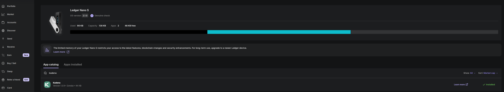
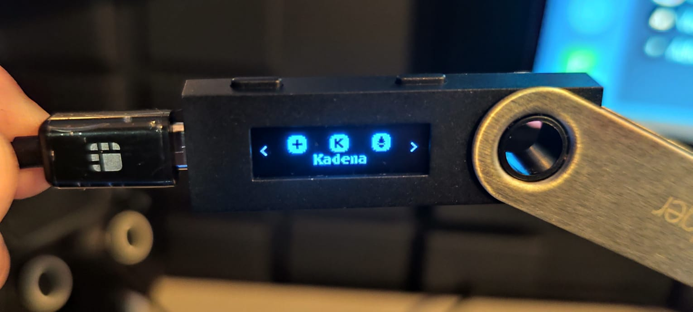
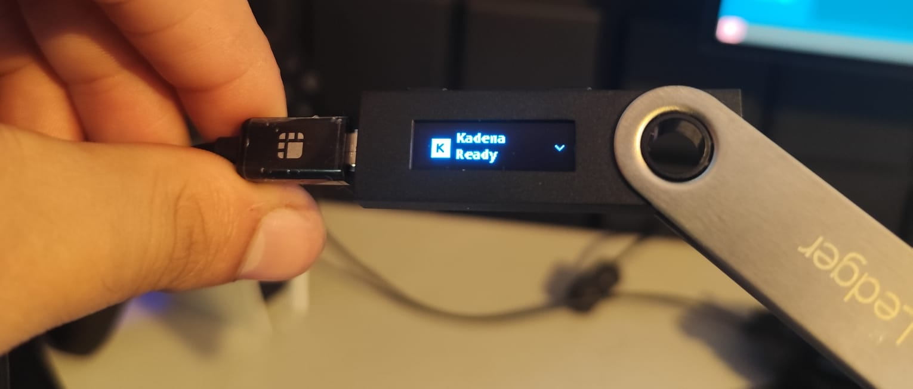
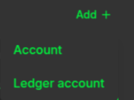
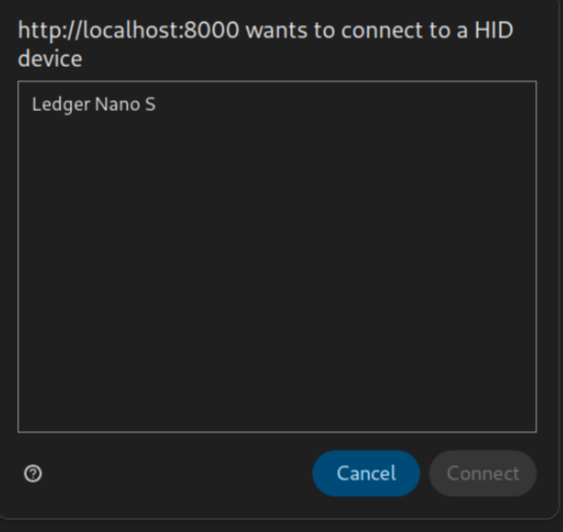

Using Ledger with the Kadena Snap
This guide walks you through how to connect and use your Ledger Hardware Wallet with snaK.
✅ Tested with Ledger Nano S
🔒 Requires HID permission to be granted to your browser
🛠️ The app provides similar functionality to the official Kadena Transfer tool, but integrated directly into your wallet flow — no extra tabs or context switching required.
Browser Compatibility
navigator.hidis required for Ledger support. Only available in HTTPS secure contexts and supported by Chromium-based desktop browsers.
| Browser | Support |
|---|---|
| Desktop Browsers | |
| Chrome | ✅ 89+ |
| Edge | ✅ 89+ |
| Firefox | ❌ No |
| Opera | ✅ 75+ |
| Safari | ❌ No |
| Mobile Browsers | |
| Chrome Android | ❌ No |
| Firefox Android | ❌ No |
| Opera Android | ❌ No |
| Safari iOS | ❌ No |
| Samsung Internet | ❌ No |
| WebView Android | ❌ No |
| Other Platforms | |
| Deno | ❓ ? |
| Node.js | ❌ No |
1. Install Kadena App on Ledger
- Open Ledger Live.
- Go to My Ledger.
- Search for Kadena and install the app.

2. Open Kadena App on Ledger

After installation:
- Unlock your Ledger.
- Navigate to and open the Kadena app on the device.
- You should see the message:
Kadena is ready.

📌 If you haven't opened the app, snaK will prompt you to open it on your Ledger.
3. Add a Ledger Account in snaK
- In snaK, click Add + in the sidebar.
- Select Ledger account.

4. Grant HID Permission
If it's your first time connecting a Ledger:
- You’ll see a browser prompt asking for permission to connect to a HID device.
- Select your Ledger device and click Connect.

5. You're Done
Your Ledger account is now added and ready to use! 🎉
You can now sign and send transactions from this account as described in other guides (e.g., Send Tokens).
Official Ledger Guide
For a detailed step-by-step guide from Ledger (including how to use Kadena Transfer), check out:
📄 Ledger’s official Kadena guide
This includes installation instructions and general advice for managing KDA safely.
Ledger-Specific Troubleshooting
Connection Issues
- If your Ledger isn't detected:
- Ensure the Kadena app is open on your device
- Try reconnecting the USB cable
- Restart your browser
- Check browser HID permissions (chrome://settings/content/hid)
Transaction Errors
- "Device disconnected" during signing:
- Keep the Kadena app open throughout the process
- Avoid screen timeout on your Ledger
- Check for firmware updates in Ledger Live
Browser Compatibility
- If HID permissions aren't available:
- Switch to Chrome/Edge/Opera (desktop versions only)
- Ensure you're on HTTPS
- Disable any wallet-extensions that might interfere
Additional Resources
-
🔑 Keys are derived the same way as in:
https://transfer.chainweb.com/transactions/transfer -
🧭 Ledger Quickstart:
https://www.ledger.com/start